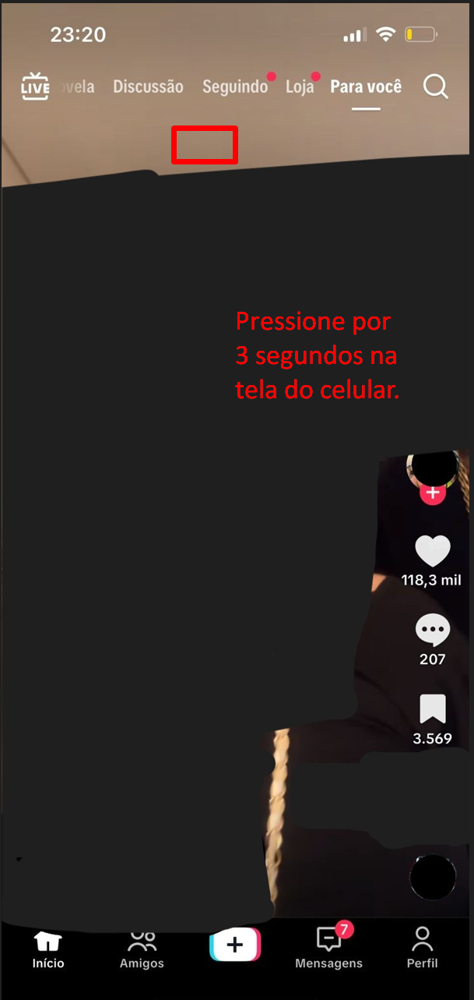
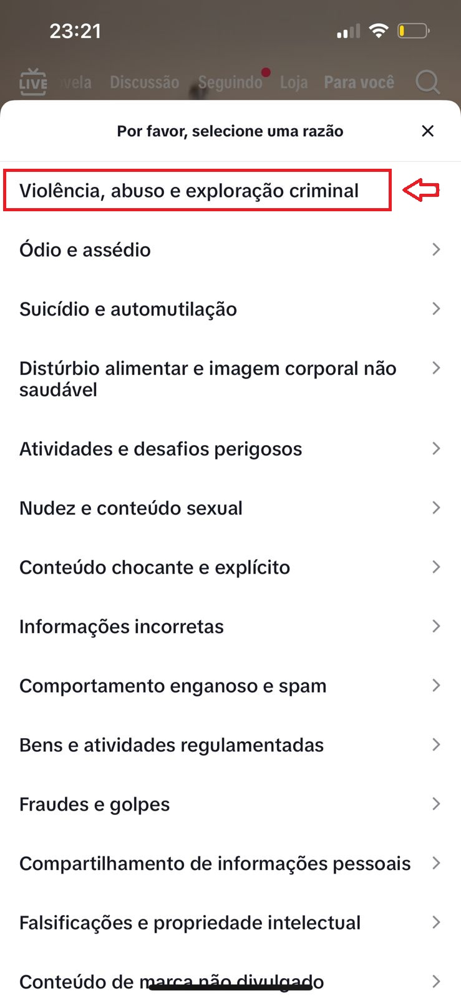
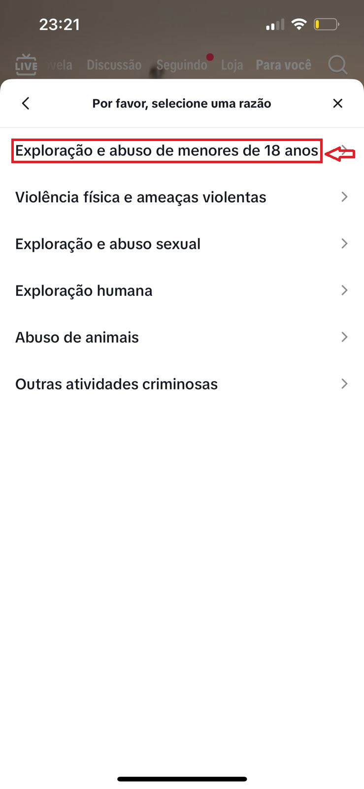

⚠️ A pornografia infantil é um crime gravíssimo, previsto tanto no Código Penal Brasileiro quanto no
Estatuto da Criança e do Adolescente (ECA – Lei nº 8.069/1990), especialmente no artigo 241-A, que
proíbe oferecer, divulgar, compartilhar, produzir ou publicar qualquer conteúdo pornográfico envolvendo menores de 18 anos.
No TikTok, predadores digitais se aproveitam da alta exposição, da dinâmica dos vídeos curtos e do sistema de
recomendações automáticas da aba “Para Você” para espalhar e consumir conteúdo com conotação sexual
envolvendo crianças e adolescentes. Esses criminosos utilizam o algoritmo da plataforma para encontrar e interagir
com vídeos de menores, curtindo, comentando e salvando publicações para estimular o sistema a recomendar conteúdos semelhantes.
Muitos desses perfis falsos agem de forma velada, fingindo ser adolescentes ou adultos “amigáveis”, mas têm como
objetivo assediar, manipular ou sexualizar menores de idade.
Também é comum o uso de hashtags ambíguas, descrições disfarçadas e emojis com duplo sentido para
atrair um público pedófilo ou enganar os sistemas de moderação da plataforma.
Além disso, alguns criadores de conteúdo inclusive adultos publicam vídeos com insinuações sexuais implícitas,
muitas vezes envolvendo crianças em danças, desafios, brincadeiras ou situações que exploram o corpo de forma inapropriada.
Esses vídeos, que à primeira vista parecem inocentes, acabam sendo usados para atrair e entreter um público pedófilo,
burlando as políticas da plataforma e normalizando a sexualização infantil sob a aparência de “tendência” ou “moda”.
Esses símbolos e comportamentos funcionam como uma forma de comunicação entre pedófilos, sendo alguns exemplos comuns:
🍭 (Doce) – alusão à infância ou à ingenuidade.
👧 (Menina) – representação explícita de uma criança.
💦 (Gotículas) – insinuação sexual.
🔞 (Proibido para menores de 18 anos) – referência a conteúdo adulto.
🍼 (Mamadeira) – símbolo usado para indicar preferência sexual por crianças.
🚨 Sempre que identificar esse tipo de conteúdo, perfis suspeitos ou interações inapropriadas nos comentários,
denuncie imediatamente dentro da plataforma e registre o caso junto às autoridades competentes.
Passos de Denúncia no TikTok (Mobile)
🔍 1. Como identificar conteúdo suspeito
• Canais com fotos de crianças, mas com descrições, hashtags ou comentários inadequados.
• Contas que seguem apenas canais de menores de idade.
• Postagens com emojis e frases de conotação sexual.
• Hashtags suspeitas, como #kidsmodel, #childbeauty, #preteenmodel, entre outras.
• Links para grupos de Telegram disfarçados.
• Vídeos aparentemente inocentes, como vlogs, desafios, danças ou clipes de funk com crianças,
mas que contêm sexualização implícita, por meio de roupas inadequadas, poses, danças provocantes,
legendas ambíguas ou enquadramentos que exploram o corpo de menores.
• Conteúdos publicados por criadores que utilizam crianças em contextos de duplo sentido para atrair público
adulto
ou pedófilo, disfarçando o material como se fosse entretenimento comum.
💡 Dica
Antes de denunciar, tire prints dos vídeos e comentários. (censure o conteúdo sensível nas imagens e entregue
somente às autoridades).
Isso servirá como prova ao registrar um Boletim de Ocorrência (B.O.).
🚨 2. Como denunciar conteúdo no TikTok
📱 Versão Mobile (Celular)
Passo 1:
Vá até o vídeo, canal ou comentário suspeito.
Passo 2:
Pressione na tela por 3 segundos e clique em “Denunciar”.

Passo 3:
Escolha a categoria “Violência, abuso e exploração criminal”.

Passo 4:
Escolha a subcategoria “Exploração e abuso de menores de 18 anos”.

Passo 5:
Envie a denúncia clicando em “Enviar”.

🧾 4. Como registrar o Boletim de Ocorrência online
Após denunciar na plataforma, formalize o caso junto às autoridades para reforçar a investigação.

Onde registrar o Boletim de Ocorrência:
Se você sabe que o autor do crime está no seu estado, registre o B.O. no site da Polícia
Civil do seu estado. Se o crime ocorreu fora do seu estado ou você não sabe de onde partiu o conteúdo,
registre na Polícia Federal, que atua em investigações de crimes virtuais interestaduais e internacionais.
🖥️ Como registrar. Passo 1:
Acesse o site da Polícia Civil do seu estado ou da Polícia Federal. Abaixo está listado os
sites da Polícia Civil de cada estado brasileiro que possuí a função de B.O. online. A Polícia Federal possui
em seu site uma categoria exclusiva para esse tipo de ocorrência.
Site da Polícia Federal:
https://apps.pf.gov.br/r/comunicapf/comunicapf/pagina-inicial

Lista de delegacias da Polícia Civil e seus respectivos estados:
Passo 2:
Clique em “Registrar Boletim de Ocorrência Online”.
Passo 3:
Escolha a opção “Crimes contra crianças e adolescentes” ou “Crimes virtuais” em caso de
ausência de ambas categorias, selecione "outros".
Passo 4:
Preencha o boletim com informações completas e objetivas sobre o ocorrido.
É essencial descrever os fatos com o máximo de clareza, incluindo detalhes que ajudem na identificação do vídeo, perfil ou autor.
Inclua no Boletim de Ocorrência:
• Uma descrição detalhada do que aconteceu, informando se o conteúdo foi postado, comentado, compartilhado, feito em dueto ou transmitido ao vivo.
• O link direto do vídeo suspeito, do perfil envolvido ou de hashtags relacionadas.
• A minutagem ou momento específico em que o conteúdo impróprio aparece (exemplo: “entre 0:08 e 0:12 do vídeo”).
• O contexto implícito, caso o vídeo tente disfarçar a sexualização por meio de desafios, danças populares, trends ou sons virais envolvendo crianças em situações inapropriadas.
• Datas e horários aproximados da publicação, e se o vídeo ainda permanece disponível ou foi removido.
• Capturas de tela (prints) anexadas, sempre com o conteúdo sensível censurado , borrando partes íntimas ou qualquer elemento indevido antes de enviar.
💡 Caso o perfil envolvido esteja interagindo com outros vídeos de menores (curtidas, comentários, duetos), registre esses comportamentos também.
Exemplo de redação para o B.O. on-line:
“No dia 06/11/2025, às 20h15, encontrei um vídeo no TikTok com indícios de sexualização infantil.
O perfil responsável utiliza o nome de usuário ‘@exemplo123’ e publicou um vídeo participando de um desafio de dança com uma criança vestida de forma inapropriada.
Entre os segundos 0:08 e 0:12, há movimentos sugestivos e foco no corpo da menor, além de comentários de adultos com conotação sexual.
Registrei capturas de tela (com as partes sensíveis censuradas) e anotei o link direto do vídeo:
‘https://www.tiktok.com/@exemplo123/video/xxxxxxxxx’.”
Caso de Emergência.
⚠️ Em caso de emergência ou risco imediato, procure a Delegacia de Proteção à Criança e ao
Adolescente (DPCA) da sua cidade ou ligue 190.
 Guia de Denúncia no TikTok
Guia de Denúncia no TikTok